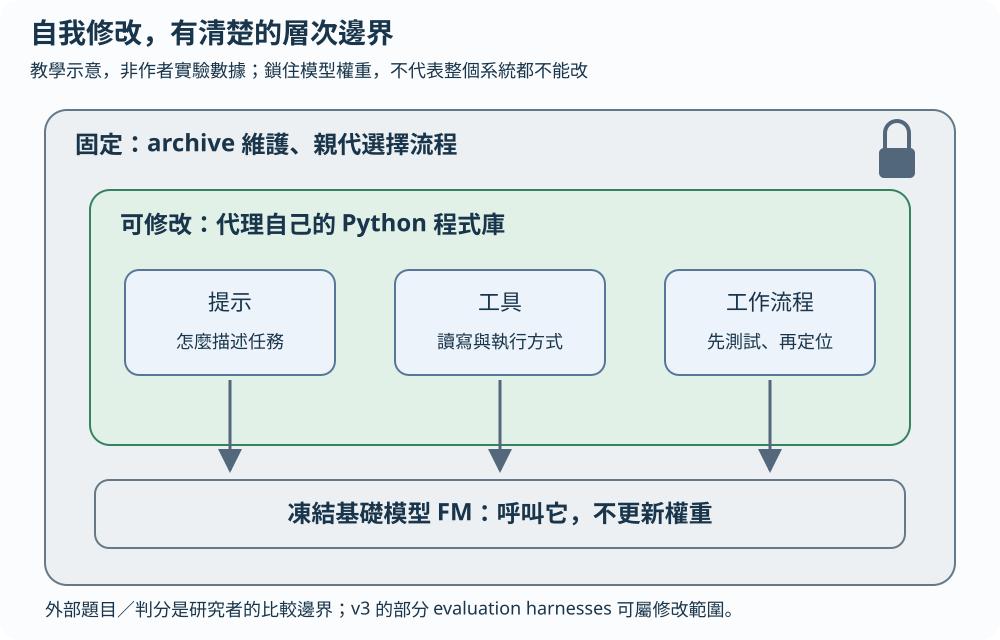
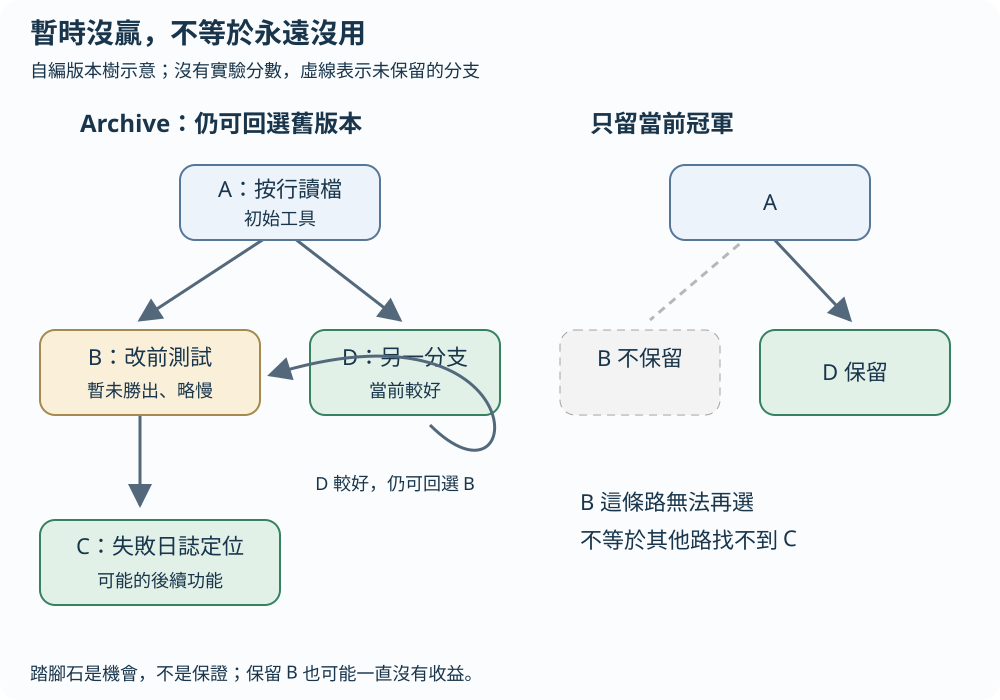
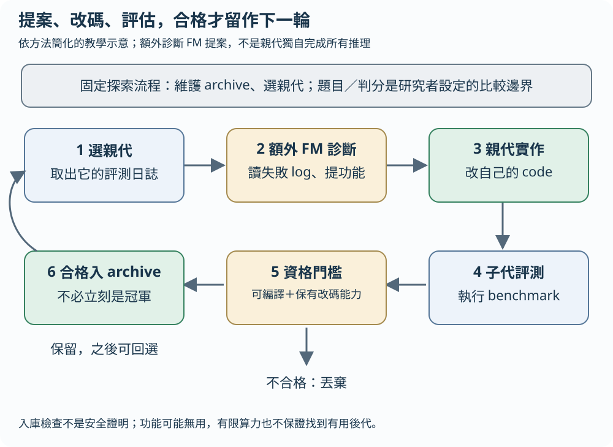

想像一位修理師傅會替自己改工具。有些新工具今天多一道工序，還沒比較快；但保留下來，日後可能成為另一項改進的起點。DGM 把這個想法用在編碼代理：讓代理改自己的程式，實測結果，再從保留的版本繼續分枝。這是生活比喻，不是論文實驗。
先分清楚：哪一部分在改？
編碼代理是能讀檔、改檔、執行程式的系統。底層基礎模型（FM）提供語言與程式生成能力，外層程式決定它看什麼提示、用哪些工具、按什麼流程工作。DGM 本篇實驗凍結基礎模型的權重，修改的是代理自己的程式庫，包括提示、工具與工作流程；沒有重新訓練基礎模型。原文 §1、§3
還有一層固定邊界。archive 是保存代理版本的檔案庫；親代選擇器決定下一輪從哪個版本出發。這套 archive 維護與親代選擇流程固定，圖中也把外部評測題目與判分標準當成研究者設定的比較邊界；這不是宣稱所有稱作 harness 的程式都不可修改。v3 的倫理說明把部分 evaluation harnesses 也列入自修改範圍。會修改自己的某些程式，不代表能修改所有規則。原文 §3、倫理說明
凍結模型，修改代理外層程式

放大閱讀圖解 ↗ · 窄螢幕可在圖內左右滑動。

圖解文字說明
- 模型層不訓練
基礎模型 FM 的權重保持凍結，並未因這輪自修改而重新訓練。
- 代理層可修改
代理自己的 Python 程式庫可改，包括提示、讀寫工具、測試使用方式與工作流程。
- 固定探索邊界
archive 維護與親代選擇不由本輪代理改寫；v3 對 evaluation harnesses 的範圍另有說明，不能把所有評測程式都稱為不可改。
跟著 A、B、C 走一次
以下完全是自編教學軌跡，不是作者發現的版本、測試結果或速度數據。
手追一個情境：測試原本就失敗，B 在改碼前先記下失敗名稱。C 讀到「解析空字串失敗」，就先查解析函式，而非改動整個檔案。A 提供讀檔工具，B 留下測試基線，C 再利用這份資訊定位錯誤。這裡展示的是功能依賴，不是在證明 C 必然勝出。
若只保留當前冠軍，B 這條暫時沒贏的分支可能不再能被選回。archive 則讓合格的 B 仍有機會成為親代；這叫踏腳石，一個版本的價值可能在後代才出現。但保留 B 不保證會選中它，更不保證會產生 C。其他路徑也可能找到相似功能。概念對照原文 §3、Fig. 3
A：能按行讀檔，找到位置後直接修改。
B：從 A 出發，增加「修改前先跑測試」。
當前多花測試時間，假設尚未勝過目前冠軍。
C：再從 B 出發，利用修改前的失敗日誌定位錯誤。
在後來的某類問題上，可能因此更容易改對位置。舊分支留著，才有回選的機會

放大閱讀圖解 ↗ · 窄螢幕可在圖內左右滑動。

圖解文字說明
- 保留 archive
A 提供按行讀檔，B 加入改前測試，C 可能從 B 加入錯誤定位；另一分支 D 當前較好，仍可回選 B。
- 只留冠軍
若只保留 D，B 這條特定分支不再可選；不代表其他路線永遠不能找到類似 C 的功能。
一輪修改要經過哪些關卡？
先從 archive 選親代。實作先把該親代的評測日誌交給另一個基礎模型診斷、提出功能建議，再把建議交給親代代理當編碼任務，修改自己的程式庫，產生子代。這個額外診斷步驟不能省略成「親代完全獨自想出所有改進」。修改的對象是代理程式，而一般解題時修改的對象是任務程式庫；Fig. 1 把兩者分開畫。原文 §3、Fig. 1、附錄 C.3
接著把子代放到 coding benchmark，也就是一組指定的編碼評測題，觀察它實際能解多少問題。只有成功編譯、仍保有編輯程式庫能力的子代，才加入 archive；否則丟棄。入庫不要求它立刻擊敗冠軍，因此才能保留不同路線。原文 §3
在自編例中，B 雖較慢，仍可能符合入庫條件；若它把編輯工具改壞，即使能輸出漂亮說明，也不能當成合格的可延續版本。這個門檻檢查「還能繼續改碼」，不是證明版本完全正確或安全。
一次自修改，先提案再評測與檢查

放大閱讀圖解 ↗ · 窄螢幕可在圖內左右滑動。

圖解文字說明
- 選親代並診斷
固定選擇器從 archive 選親代；額外診斷 FM 讀該親代的失敗與評測日誌，提出功能建議。
- 改自己的程式
親代將建議當成編碼任務，修改代理自己的程式庫，產生子代；不是重新訓練底層 FM。
- 評測與資格門檻
評測子代；只有成功編譯且保有程式庫編輯能力者入 archive，其餘丟棄。合格但當前非冠軍的版本仍可保留。
名字有 Gödel，卻沒有形式證明保證
哥德爾機原本要求以形式證明確認自我修改有益。DGM 改採經驗驗證：跑指定評測，看修改帶來什麼結果。它沒有交付每次修改都可證明有益的系統，也沒有保證可以無限進步。原文 §1、§3
方法有一個重要假設：編碼題做得更好，能反映代理更有能力修改自己。這個連結合理與否仍要實測，不能只靠「自我改進」四個字成立。評測分數改善，也不等於任意任務都變好。原文 §6
保留哪些限制，才不會讀過頭？
作者比較了不同模型、基準與程式語言間的遷移，提供某些改進能轉用的證據。這是有限設定下的觀察，不能排除所有過擬合，也不是一般智能的證明。原文 §4.4、Fig. 4
搜尋需要反覆呼叫模型、改碼與跑測試，算力和 API 成本高。底層模型的能力也限制可提出的改進。保存更多版本給了探索機會，仍不保證在有限預算內走到有用分支。原文 §6
安全也不能只看解題分數。若評測沒量到某種脆弱性，演化可能把它一路帶下去。論文採沙箱、限時、監督與可追溯版本譜系，但這些措施不是安全性的形式證明。較高 benchmark 分數不保證代理在別的環境也可靠。原文 §5
深入：親代選擇與實驗究竟支持什麼？
原文的親代選擇同時偏好表現較好、已有可改碼子代較少的版本，兼顧利用與探索；符合親代資格的版本保有非零選中機率；附錄 C.2 會排除已達滿分的版本。這是選擇規則，不是在有限次迭代內必定選遍所有版本的保證。原文 §3、附錄 C.2
實驗把完整 DGM 與拿掉自我改進或開放式探索的設定比較，支持這兩個組件在所測編碼任務中有用。它沒有證明任意 archive、任意親代選擇策略都會有效，也沒有證明每個次優版本都是有用踏腳石。原文 §4.2–4.3、Fig. 2–3
回原文，先看哪張圖？
先看 Fig. 1，分清「改自己的代理程式庫」與「解任務、改任務程式庫」。再讀 §3 的 archive、親代選擇與入庫門檻，對照附錄 C.4 的流程。接著看 Fig. 3 的譜系與踏腳石，問某次改進從哪個舊分支出現。最後看 Fig. 4 的遷移範圍，連同 §5 安全討論、§6 成本與限制一起讀。原文 PDF
原文與來源
此頁依下列固定快照編寫；教學例子與程式片段用來解釋方法，請回到原文確認研究設定與結果。